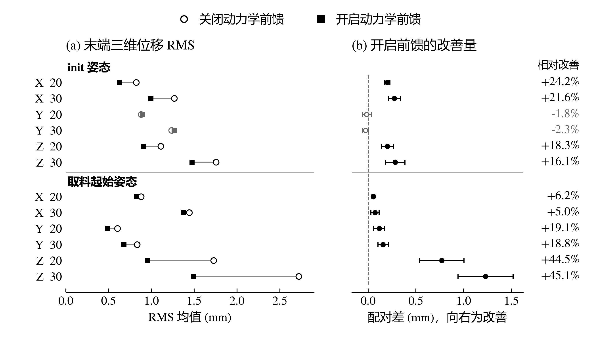
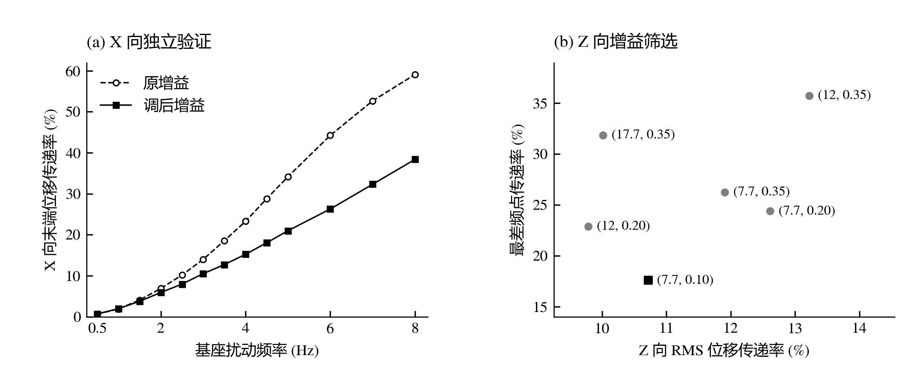
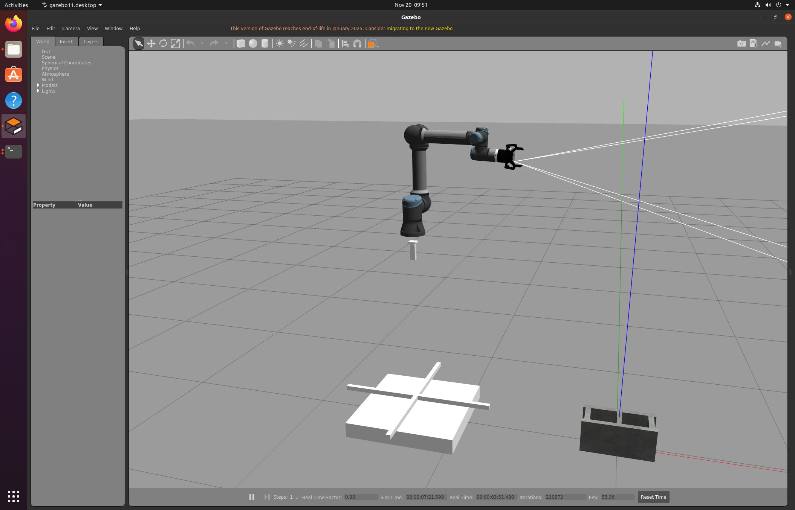

基座平移扰动下 UR5e 末端定点保持的动力学前馈控制
Gazebo 仿真与配对开关试验
摘要针对基座平移引起的 UR5e 末端偏移，在世界坐标系 PID 和运动学前馈的基础上加入机械臂动力学前馈。根据基座加速度估计关节补偿力矩，采用导纳式弹簧–阻尼映射将其转成关节位置偏置。在 Gazebo 中只切换动力学支路，复测两个姿态、三个扰动轴和两种峰值的 12 个工况。10 个工况的末端三维位移 RMS 降低 4.96%–45.10%，逐工况配对 95% 置信区间均位于改善侧。init 姿态的两个 Y 向工况区间跨零。结果支持该方法在已测平移扰动下提高末端定点保持精度。图 1
1 研究问题
龙门基座的平移既改变末端在世界坐标系中的位置，也在关节上产生惯性负载。运动学前馈补偿坐标运动，PID 根据实际偏差纠偏。本研究考察，在两者保持相同的条件下，根据机械臂动力学提前生成关节位置补偿，能否进一步减少末端偏移。
2 控制方法与验证设计
2.1 从基座加速度到关节位置补偿
世界系 PID 与运动学前馈生成笛卡尔速度指令，经逆运动学和积分得到关节参考位置 qref。带末端负载的 URDF/KDL 模型根据实测关节状态，估计维持末端定点所需的惯性力矩与基座平移的等效重力差。
J# 为阻尼伪逆，M 为关节惯量矩阵，G 为当前姿态的重力力矩，ab 为基座坐标系中的线加速度。默认对龙门速度指令求导，再通过拟合的速度环模型修正加速度。
力矩按基座轴分解，X、Y 向先投影到沿扰动轴的末端平移，再与 Z 向一起按 −2、−0.75、+1 加权。参考导纳控制的力到运动映射[1]，将加权限幅后的力矩 τ̃in 转成位置偏置 δq，叠加到关节指令。常规重力和科氏补偿持续工作。
Pj 与 Dj 取自仿真关节位置环的比例与微分增益。式 (2) 以控制周期作步长，用后向欧拉法更新。
2.2 配对开关对照
试验使用 ROS Noetic、Gazebo 11 和 200 Hz 基座状态。初始姿态 init 与取料起始姿态 1st_reco_start 分别测试 X、Y、Z 向的基座平移。扰动由 0.5–8 Hz 的 13 个正弦分量叠加，指令峰值为 20 或 30 mm，分析窗口分别为 8 s 和 4 s。
每工况五对，共 120 段。同一对使用相同波形和起始采样相位，开关先后顺序交替。两组均保留相同的 PID、运动学前馈及重力、科氏补偿，仅切换式 (2) 的动力学支路。
主指标为末端世界系位置相对扰动前参考位置的三维欧氏距离 RMS，按时间积分计算。转角 RMS 为次指标。对五组「关闭 − 开启」差值构建逐工况 t 置信区间（95%，未经多重比较校正）。相对改善为配对差均值除以关闭组 RMS 均值。
复测沿用原验收波形种子，组间生成不同的多正弦相位。该设计固定了开关对照的激励条件，并检验同批波形下的运行可重复性。
3 末端位置保持的改善
图 1 给出最终配置的全部工况。收益最大的是取料起始 Z 向 30 mm，开启后 RMS 从 2.721 mm 降至 1.494 mm。init Y 向的均值分别升高 1.75% 和 2.26%，配对区间均跨零。

3.1 转角、限速与补充工况
转角与约束。 转角 RMS 有 9 个工况的配对区间位于改善侧，其余 3 个跨零。取料起始 X 向 30 mm 的限速告警开关各 4 段，20 mm 关闭组另有 1 段。惯性力矩钳位共 0 次。
4 讨论
惯性力矩与等效重力差可能相消，补偿的最佳符号也可能随姿态变化。Y 向权重复验中，init 有收益的正权重在向取料起始姿态插值 20% 后已增大误差。权重试验 · 模型灵敏度
复用种子限制了对未见波形的推断。双轴和测量前馈的证据各限于一组姿态与方向。基座旋转、未知外力、轨迹跟踪与实机表现仍待验证。可选验证项目
5 结论
导纳式力矩到位置映射将机械臂动力学接入了现有反馈系统，并提高了 Gazebo 平移扰动下多数已测工况的末端定点保持精度。现有证据支持保留指令模型与分轴固定权重作为默认配置。
复现与数据
逐段数据记录了各工况的姿态、轴向和种子。主图由同一份数据生成。数据 · 绘图脚本 · 试验入口 · 控制器实现
复跑 init X 向两种幅值
在已同步并编译的 ROS 仿真工作区中，从试验目录运行。
bash run.sh 输出目录 --compare-tuned-inertia \
--inertia-phase-balanced --pose init \
--axis x --inertia-seed 1021949附录 A 世界系 PID 调参的独立收益
在 200 Hz 基座状态下逐轴筛选比例和微分增益，再用独立波形做配对验证。每一对固定其余控制设置。X、Y 向最终采用 Kp = 12.0、Kd = 0.35。X 向原增益为 17.7 和 0.10，Y 向为 7.7 和 0.10。图 1 的动力学前馈对照两组均使用调参后的 PID。
| 姿态 | 扰动 | 调参前 → 调参后（mm） | RMS 降幅 |
|---|---|---|---|
init | X，20 mm | 1.316 → 0.864 | 34.3% |
init | Y，20 mm | 1.242 → 0.854 | 31.2% |
init | Y，30 mm | 1.862 → 1.282 | 31.1% |
| 取料起始 | Y，20 mm | 1.317 → 0.862 | 34.6% |
| 取料起始 | Y，30 mm | 1.998 → 1.363 | 31.8% |

init 姿态的 Y 向调参验证。 左图为 20 mm 多频扰动下的逐频传递率。右图为各对改善、均值及 95% 配对区间。逐段数据 · 取料起始复验
init 姿态的 X 向验证和 Z 向筛选。 扰动峰值为 20 mm。左图为 X 向六组均值，右图每个点为一套 Z 向增益在两个筛选区组的均值，黑方块为现用增益。X 向数据 · Z 向数据在 X 向验证中，最差频点传递率由 59.07% 降至 38.37%。Z 向筛选中，候选增益令 RMS 从 0.842 mm 降至 0.789 mm，最差频点传递率从 17.57% 升至 22.89%。为限制最差频点的误差，Z 向沿用 7.7 和 0.10。部署参数
附录 B 基座采样、动态映射与试验重复性
基座状态更新率
保持动态映射和反馈增益相同，将基座状态更新率从 50 Hz 提高至 200 Hz。3 Hz 和 5 Hz 下的末端传递率分别下降 17.33 和 29.67 个百分点，95% 配对区间分别为 [15.09, 19.57] 和 [24.42, 34.91] 个百分点。常规启动的复测也得到同方向变化。常规启动复测

导纳式动态映射的关节补偿量
以静态力矩到位置换算为基线，在 5 Hz 扰动下改用弹簧–阻尼动态映射。50 Hz 基座采样下，峰值关节偏置由 4.03 降至 2.50 mrad。200 Hz 下由 4.34 降至 2.65 mrad。两档采样率的 5 Hz 末端传递率差值区间均跨零。200 Hz 映射数据

附录 C Ubuntu 虚拟机中的 Gazebo 实况
在 VMware 的 Ubuntu 20.04 虚拟机中，使用 ROS Noetic 和 Gazebo 11.15.1 启动项目场景。机械臂从 SRDF 的 init 姿态切换到世界系 PID 定点保持，龙门沿 Y 轴施加峰值 20 mm、频率 3 Hz 的正弦位移指令。基座状态话题的测得发布率约为 200 Hz。场景启动 · 扰动启动

active: True 和 static_mapping: False，表明动态惯性前馈正在生效。末端三维位移的配对统计见图 1。